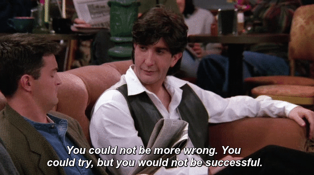

… adds needless overhead
… interrupts my workflow
… slows me down
… anyway, I already have regression tests
So much data! All the research!
Just not in this talk.
… adds needless overhead
… interrupts my workflow
… slows me down
… anyway, I already have forces me to write regression tests for code I don't necessarily remember writing (or didn't write in the first place)
npm install --save-dev jest
It's at least that easy in your development environment of choice.
There's a TDD framework for COBOL.
A unit test is an automated piece of code that invokes a unit of work in the system and then checks a single assumption about the behavior of that unit of work.(Roy Osherove)
test('high noon', () => {
const time = '12:00:00';
const expected = [
[
"*it*", "*is*", "half", "ten"
],
[
"quarter", "twenty"
],
[
"five", "minutes", "to"
],
[
"past", "one", "three"
],
[
"two", "four", "five"
],
[
"six", "seven", "eight"
],
[
"nine", "ten", "eleven"
],
[
"*twelve*", "*o'clock*"
]
];
expect(
clockwork.highlightTime(time))
.toStrictEqual(expected);
});No, really.
highlightTime() {
return [
[
"*it*", "*is*", "half", "ten"
],
[
"quarter", "twenty"
],
[
"five", "minutes", "to"
],
[
"past", "one", "three"
],
[
"two", "four", "five"
],
[
"six", "seven", "eight"
],
[
"nine", "ten", "eleven"
],
[
"*twelve*", "*o'clock*"
]
];
}
I certainly don't like testing it.
Writing tests means more calls, sooner, to the method in question.
"Annoying to test" usually goes hand-in-hand with "annoying to use"
With TDD, little annoyances become noticeable right away - this technical debt had a lifespan of minutes.
Only test the time-to-words conversion for now, don't worry about the display.
const time = '12:00:00';
const expected = [
"it", "is", "twelve", "o'clock"
];
expect(clockwork.timeWords(time))
.toStrictEqual(expected);
module.exports = {
timeWords() {
return [
"it", "is", "twelve", "o'clock"
];
}
}
--- a/trivial.test.js
+++ b/trivial.test.js
@@ -1,7 +1,7 @@
test('high noon', () => {
- const time = '12:00:00';
+ const time = '12:00';
test('another hour', () => {
const time = '10:00';
const expected = [
"it", "is", "ten", "o'clock"
];
expect(clockwork.timeWords(time))
.toStrictEqual(expected);
});
FAIL
const hours = [
"twelve", "one", "two", "three",
"four", "five", "six", "seven",
"eight", "nine", "ten", "eleven"
];
module.exports = {
timeWords(timestring) {
const parts = timestring.split(':');
const hour = Number(parts[0]);
const hourStr = hours[hour % 12];
return [
"it", "is", hourStr, "o'clock"
];
}
}
function timeWords(timestring) {
const parts = parseTime(timestring);
const hour = parts[0];
const hourStr = hours[hour % 12];
return [
"it", "is", hourStr, "o'clock"
];
}
function parseTime(timestr) {
return timestr
.split(':')
.map(numstr => Number(numstr));
}
module.exports = {
timeWords
}
test('midnight', () => {
const time = '00:00';
const expected = [
"it", "is", "twelve", "o'clock"
];
//...
test('handle PM times', () => {
const time = '22:00';
const expected = [
"it", "is", "ten", "o'clock"
];
const time = '12:05';
const expected = [
"it", "is", "five", "minutes", "past", "twelve"
];
FAIL
- return [
- "it", "is", hourStr, "o'clock"
- ];
+ if (minute == 0)
+ {
+ return [
+ "it", "is", hourStr, "o'clock"
+ ];
+ }
+ else {
+ const minuteStr = numberWords[minute];
+
+ return [
+ "it", "is", minuteStr, "minutes", "past", hourStr
+ ];
+ }
test('twenty past the hour', () => {
const time = '12:20';
const expected = [
"it", "is", "twenty", "minutes", "past", "twelve"
];
function numberWords(num) {
const words = [
"twelve", "one", "two", "three",
"four", "five", "six", "seven",
"eight", "nine", "ten", "eleven"
];
if (num == 20) {
return "twenty";
}
return words[num];
}
const time = '12:06';
const expected = [
"it", "is", "five", "minutes", "past", "twelve"
];
FAIL
const minute = roundMinutes(parts[1]);
// ...
function roundMinutes(minutes) {
return minutes - minutes % 5;
}
Yes we can!
test('quarter past the hour', () => {
const time = '12:15';
const expected = [
"it", "is", "quarter", "past", "twelve"
];
expect(clockwork.timeWords(time)).toStrictEqual(expected);
});
Umm, actually, "quarter" is not even a number.
function minuteWords(minutes) {
if (minutes == "20") {
return ["twenty", "minutes"];
}
else if (minutes == 15) {
return ["quarter"];
}
else {
return [numberWords(minutes), "minutes"];
}
}
const time = '12:30';
const expected = [
"it", "is", "half", "past", "twelve"
];
FAIL
else if (minutes == 15) {
return ["quarter"];
}
+ else if (minutes == 30) {
+ return ["half"];
+ }
else {
return [numberWords(minutes), "minutes"];
}
test('twenty-five past the hour', () => {
const time = '12:25';
const expected = [
"it", "is", "twenty", "five", "minutes", "past", "twelve"
];
expect(clockwork.timeWords(time)).toStrictEqual(expected);
});
FAIL
else if (minutes == 15) {
return ["quarter"];
}
+ else if (minutes == 25) {
+ return ["twenty", "five", "minutes"];
+ }
else if (minutes == 30) {
return ["half"];
}
test('five to one', () => {
const time = '12:55';
const expected = [
"it", "is", "five", "minutes", "to", "one"
];
expect(clockwork.timeWords(time)).toStrictEqual(expected);
})
FAIL
function timeWords(timestring) {
const parts = parseTime(timestring);
let hour = parts[0] % 12;
let minute = roundMinutes(parts[1]);
if (minute == 0)
{
return [
"it", "is", numberWords(hour), "o'clock"
];
}
else if (minute > 30) {
++hour;
minute = 60 - minute;
const minuteStr = minuteWords(minute);
return ["it", "is"]
.concat(minuteStr)
.concat(["to", numberWords(hour)]);
}
else {
const minuteStr = minuteWords(minute);
return ["it", "is"]
.concat(minuteStr)
.concat(["past", numberWords(hour)]);
}
}
function timeWords(timestring) {
const parts = parseTime(timestring);
let hour = parts[0] % 12;
let minute = roundMinutes(parts[1]);
if (minute == 0)
{
return [
"it", "is", numberWords(hour), "o'clock"
];
}
else {
let direction = "past";
if (minute > 30) {
direction = "to";
++hour;
minute = 60 - minute;
}
return ["it", "is"]
.concat(minuteWords(minute))
.concat([direction, numberWords(hour)]);
}
}
Remember this?
test('highlight in order', () => {
const timewords = ["it", "is", "twelve", "o'clock"];
const expected = [
["*it", "*is", "half", "ten"],
["quarter", "twenty"],
["five", "minutes", "to"],
["past", "one", "three"],
["two", "four", "five"],
["six", "seven", "eight"],
["nine", "ten", "eleven"],
["*twelve", "*o'clock"]
];
expect(highlights(timewords)).toStrictEqual(expected);
});
FAIL
const theBoard = [
["it", "is", "half", "ten"],
["quarter", "twenty"],
["five", "minutes", "to"],
["past", "one", "three"],
["two", "four", "five"],
["six", "seven", "eight"],
["nine", "ten", "eleven"],
["twelve", "o'clock"]
];
function highlights(timeWords) {
const result = [];
const remaining = timeWords.slice(0);
let nextWord = remaining.shift();
theBoard.forEach((row) => {
const newRow = [];
row.forEach((word) => {
if (word === nextWord) {
newRow.push(`*${word}`);
nextWord = remaining.shift();
}
else {
newRow.push(word);
}
});
result.push(newRow);
});
return result;
}
Some simple client code:
setInterval(() => {
const now = new Date();
const timeStr = `${pad(now.getHours)}:${pad(now.getMinutes())}`;
const words = timeWords(timeStr);
const highlighted = highlights(words);
showWords(highlighted);
}, 100);
function showWord(word, line) {
let newWord = null;
if (isHighlighted(word)) {
newWord = document.createElement('b');
newWord.innerHTML = getText(word);
}
else {
newWord = document.createTextNode(getText(word));
}
line.appendChild(newWord)
} Well, when something is highlighted...
test('is highlighted', () => {
expect(isHighlighted('*foo')).toBe(true);
});
FAIL
function isHighlighted() {
return true;
}
test('is not highlighted', () => {
expect(isHighlighted('foo')).toBe(false);
});
FAIL
function isHighlighted(word) {
return word.slice(0, 1) === '*';
}
(for non-highlighted text)
test('get non-highlighted text', () => {
expect(getText('foo')).toEqual('foo');
});
function getText(word) {
return word;
}
test('get highlighted text', () => {
expect(getText('*foo')).toEqual('foo');
});
FAIL
function getText(word) {
if (isHighlighted(word)) {
return word.slice(1);
}
else {
return word;
}
}
We add a formatTime() function, and don't make the client code do the work
test('format noon', () => {
const noon = new Date();
noon.setHours(12);
noon.setMinutes(0);
expect(formatTime(noon)).toEqual('12:00');
});
function formatTime(dateTime) {
return `${pad(dateTime.getHours())}:${pad(dateTime.getMinutes())}`;
}
function pad(num) {
return `0${num}`.slice(-2);
}
None of this helps me make broad changes.

+const testClock = GetClockwork('en');
//...
- expect(highlights(timewords))
- .toStrictEqual(expected);
+ expect(testClock.highlights(timewords))
+ .toStrictEqual(expected);
module.exports = {
- timeWords,
- highlights,
- isHighlighted,
- getText,
- formatTime
+ GetClockwork(language) {
+ return {
+ timeWords,
+ highlights,
+ isHighlighted,
+ getText,
+ formatTime
+ };
+ }
};
const testClock = GetClockwork('es'); // Spanish
test('noon', () => {
const time = '12:00';
const expected = [
"son", "las", "doce"
];
expect(testClock.timeWords(time)).toStrictEqual(expected);
});
FAIL
-function timeWords(timestring, numberText) {
+function timeWords(timestring, numberText, prefix, suffix) {
const parts = parseTime(timestring);
let hour = parts[0] % 12;
let minute = roundMinutes(parts[1]);
if (minute === 0) {
- return [
- "it", "is", numberWords(hour, numberText), "o'clock"
- ];
+ const results = prefix
+ .concat(numberWords(hour, numberText));
+
+ if (suffix) {
+ return results.concat(suffix);
+ }
+ else {
+ return results;
+ }
}
else {
let direction = "past";
@@ -138,9 +142,43 @@ function GetClockwork(language) {
"eleven"
];
+ let prefix = ["it", "is"];
+ let suffix = ["o'clock"];
+
+ if (language === "es") {
+ numberText = [
+ "doce",
+ "uno",
+ "dos",
+ "tres",
+ "cuatro",
+ "cinco",
+ "seis",
+ "siete",
+ "ocho",
+ "nueve",
+ "diez",
+ "once"
+ ];
+
+ theBoard = [
+ ["es", "son", "la", "las", "uno"],
+ ["dos", "tres", "cuatro"],
+ ["cinco", "seis", "siete"],
+ ["ocho", "nueve", "diez"],
+ ["once", "doce", "y", "menos"],
+ ["cuarto", "media"],
+ ["cinco", "diez", "veinte"],
+ ["veinticinco"]
+ ];
+
+ prefix = ["son", "las"];
+ suffix = null;
+ }
+
return {
timeWords: (timestr) => {
- return timeWords(timestr, numberText);
+ return timeWords(timestr, numberText, prefix, suffix);
},
Spanish has singular/plural time distinctions that English does not.
Son las doce, but es la una. (roughly "they are twelve", "it is one"). We don't know how to do that yet.
test('one is prefixed with "la"', () => {
const time = '1:00';
const expected = [
"es", "la", "una"
];
expect(testClock.timeWords(time))
.toStrictEqual(expected);
FAIL
let prefixes = [
["it", "is"]
];
if (language === "es") {
prefixes = [
["es", "la"],
["son", "las"]
];
}
// ...
function timeWords(timestring, numberText, prefixes, suffix) {
// ...
const singular = 0;
const plural = prefixes.length === 1 ? 0 : 1;
const usedPrefix = hour == 1 ? singular : plural;
test('1:10 es la una y diez', () => {
const time = '1:10';
const expected = [
"es", "la", "una", "y", "diez"
];
FAIL
- let direction = "past";
+ let direction = "y";
if (minute > 30) {
- direction = "to";
+ direction = "menos";
++hour;
minute = 60 - minute;
}
return this.prefixes[usedPrefix]
- .concat(this.minuteWords(minute))
- .concat([direction, this.numberWords(hour)]);
+ .concat([this.numberWords(hour), direction])
+ .concat(this.minuteWords(minute));
test('12:45 es la una menos quarto', () => {
const time = '12:45';
const expected = [
"es", "la", "una", "menos", "cuarto"
];
expect(testClock.timeWords(time)).toStrictEqual(expected);
});
FAIL
let direction = "y";
if (minute > 30) {
direction = "menos";
++hour;
minute = 60 - minute;
}
test('half past the hour', () => {
const time = '12:30';
const expected = [
"son", "las", "doce", "y", "media"
];
expect(testClock.timeWords(time)).toStrictEqual(expected);
});
test('twenty-five past the hour', () => {
const time = '12:25';
const expected = [
"son", "las", "doce", "y", "veinticinco"
];
expect(testClock.timeWords(time)).toStrictEqual(expected);
});
FAIL x 2
numberWords(num) {
if (num === 20) {
- return "twenty";
+ return "veinte";
}
else if (num === 15) {
- return "quarter";
+ return "cuarto";
+ }
+ else if (num === 25) {
+ return "veinticinco";
+ }
+ else if (num === 30) {
+ return "media";
}
return this.numberText[num];
}
minuteWords(minutes) {
+ return [this.numberWords(minutes)];
}
Huge thanks to ONETUG
and all our sponsors.